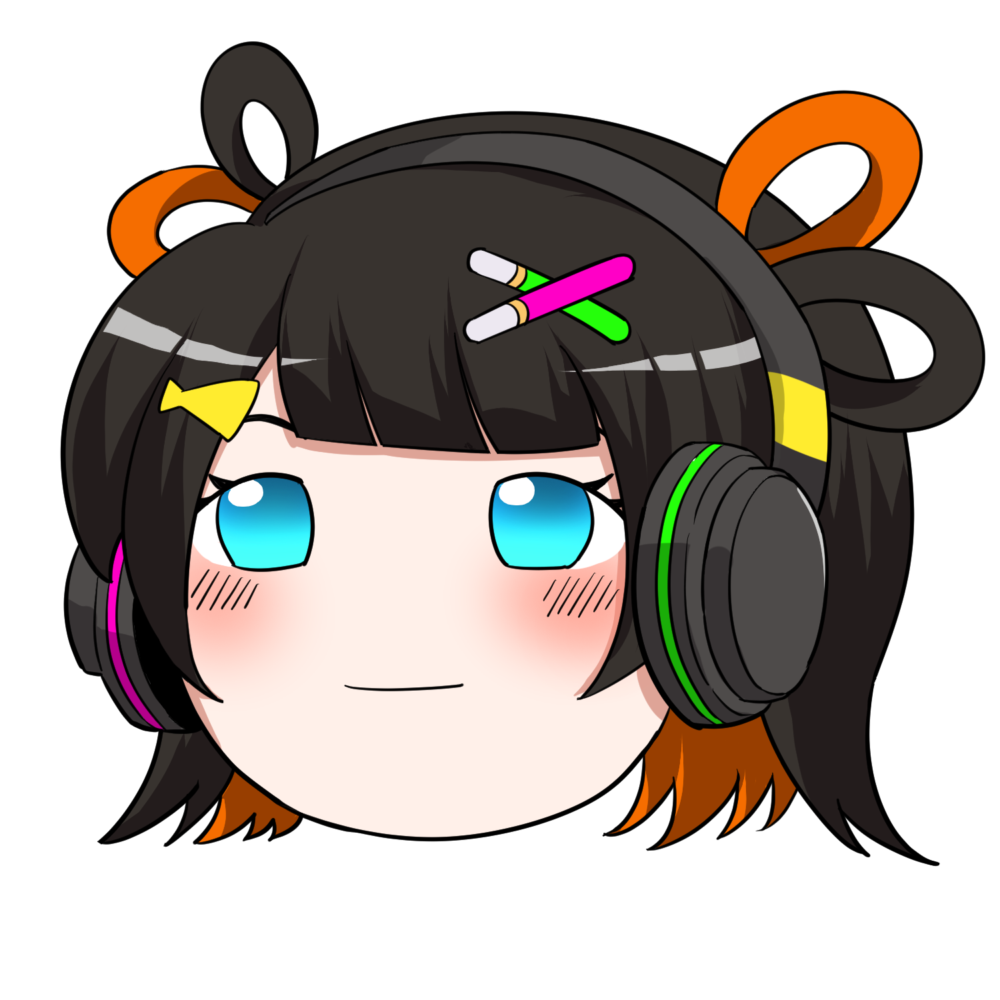
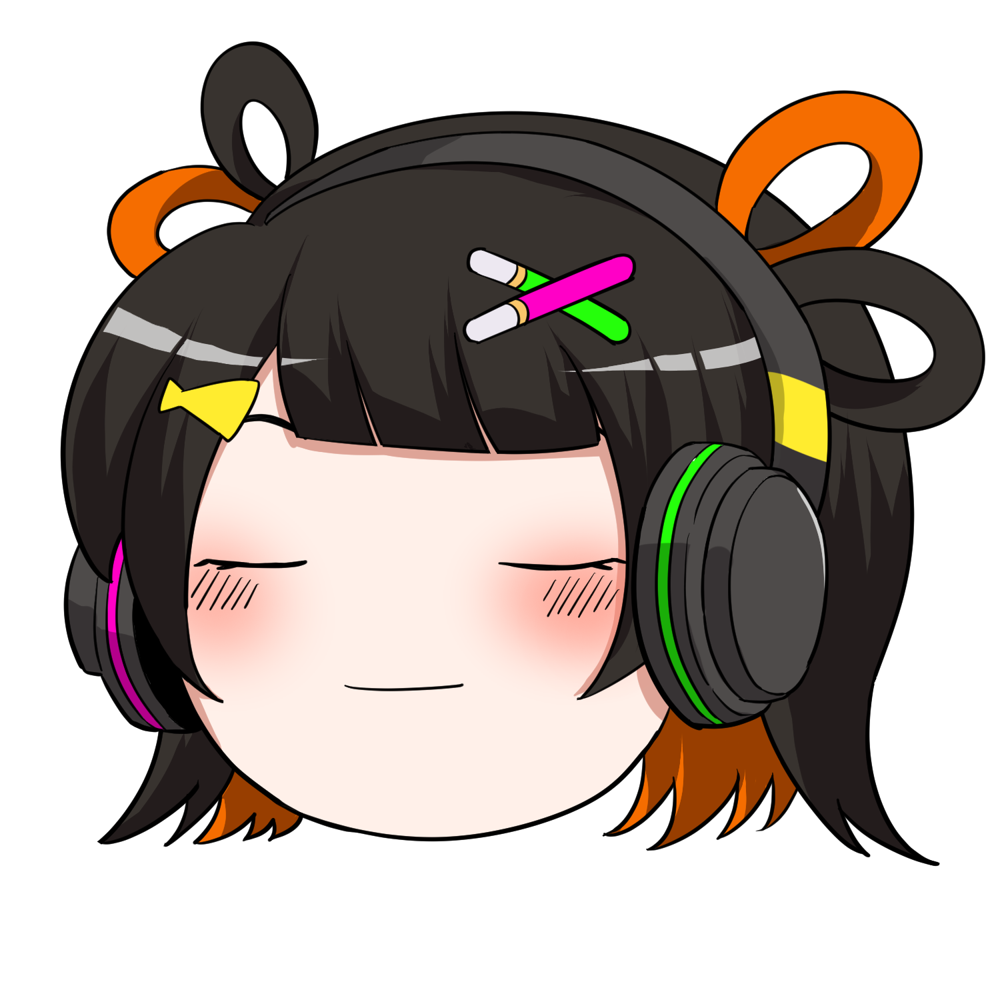
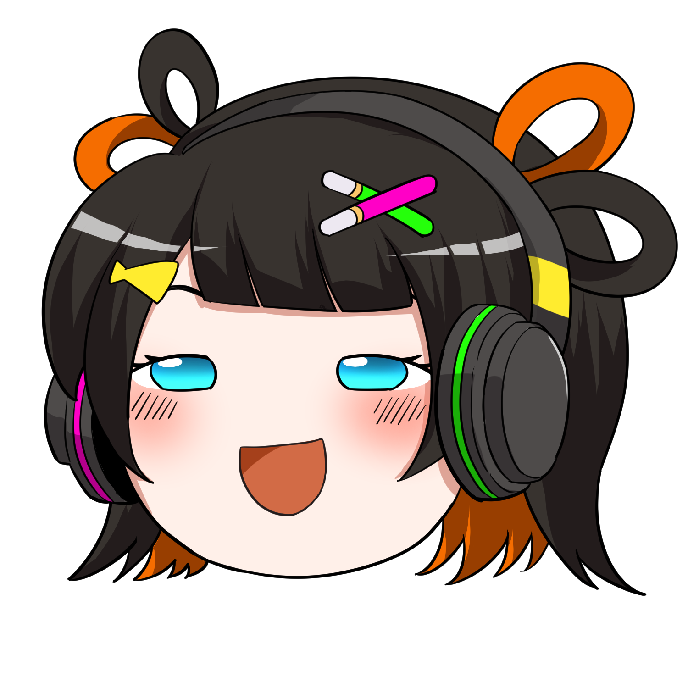

りんく
食事・生活担当明るく元気がモットーのムードメーカー。難しい話が出ると「むずかしいのだ！」と素直に反応してくれる読者の代表役。夜食大好きで、カップヌードルのカレー味とシーフード味が特に好物。
| 一人称 | ボク |
|---|---|
| 語尾 | 〜なのだ |
| 性格 | 明るい・素直・好奇心旺盛 |
| サイトでの役割 | 読者の質問代表「ボクにもわかるように説明してほしいのだ！」 |
| 好きなもの | カップヌードル、夜食 |
「エクソソームって何なのだ？お弁当箱みたいなものなのだ？」



